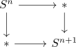

n-sphere is n-1 connected space
Proposition
the n-sphere is an (n-1)-connected space
Proof
corollary of attaching n-cells and n-1 connected inclusion and d-connected map and d-1 connected inclusion of a point for
\begin{align*}
\iota: * \hookrightarrow S^n
\end{align*}
alternative proof
induction basis $n=0, n=1$
for $n = 0$ and $n=1$ this is elementary
induction step
First remark that $S^n$ is connected for $n \geq 1$. Then consider the pushout in category of Anima

then blakers massey for anima shows that the map on vertical fibers, which we can identify
\begin{align*}
S^n \rightarrow \Omega S^{n+1}
\end{align*}
is \(n\)-connected.
In particular since $S^n$ is \(n-1\)-connceted (by induction), it follows that $\Omega S^{n+1}$ is \(n-1\)-connected and hence as $S^{n+1}$ is connected we get that $S^{n+1}$ is \(n\)-connected.